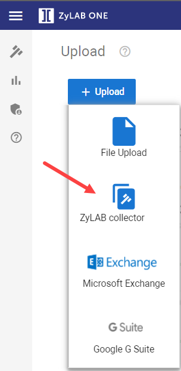

On the Upload page, select Upload > ZyLAB Collector.

- Sources
Select the source matter(s) you want to collect data from. - Family Expansion
Select the mode in which documents must be collected. For now, only 'None (only matching documents)' is available. - Impersonate Service User
It is advised to keep this setting enabled. - Set the Custodian and Source for all locations
Define (select or add) the custodian and source.
Most fields will be mapped automatically and saved as Mapped fields. All remaining fields can be mapped manually.